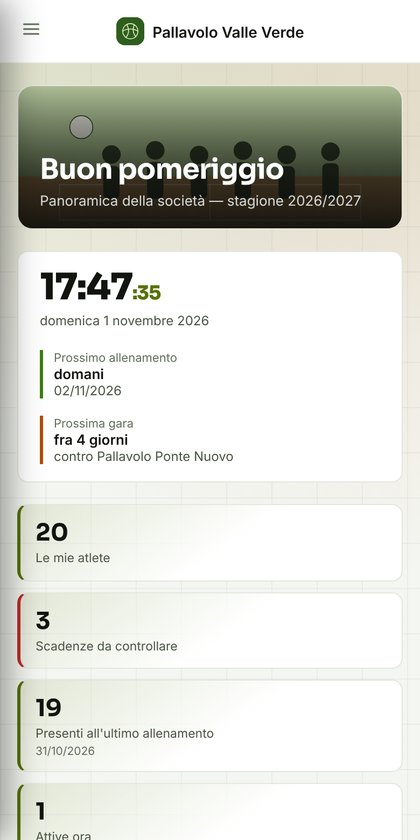
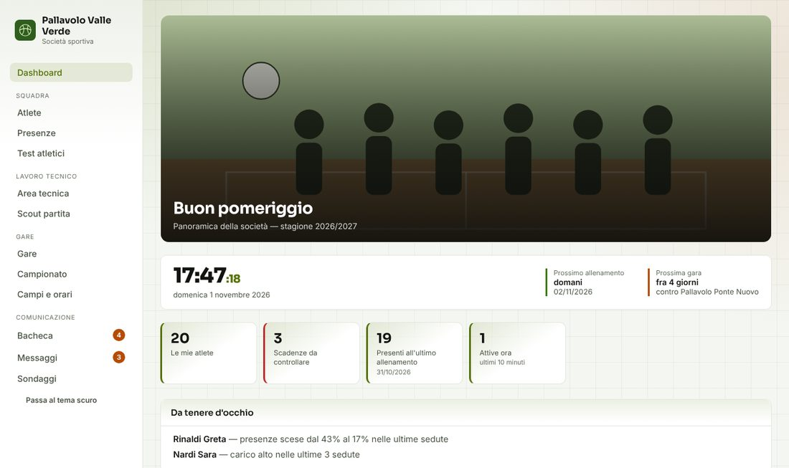
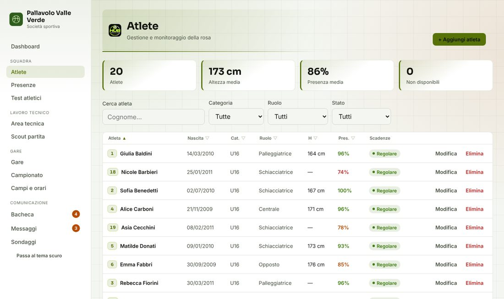
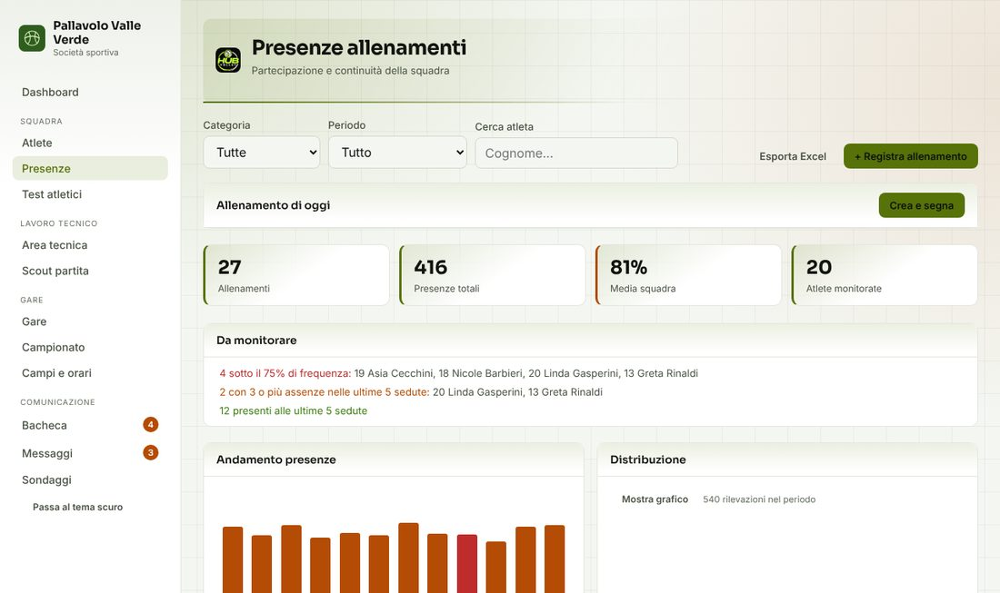
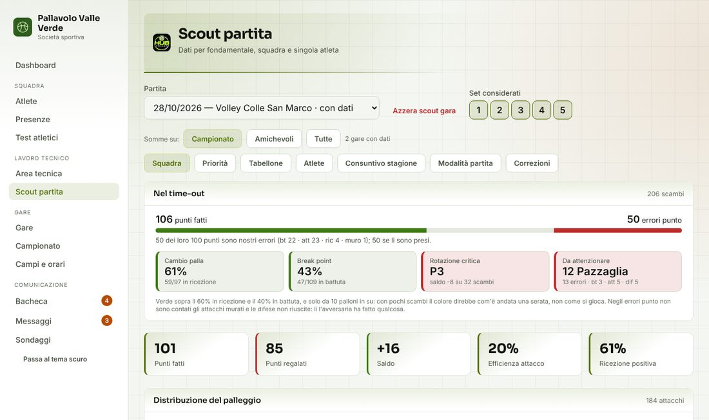
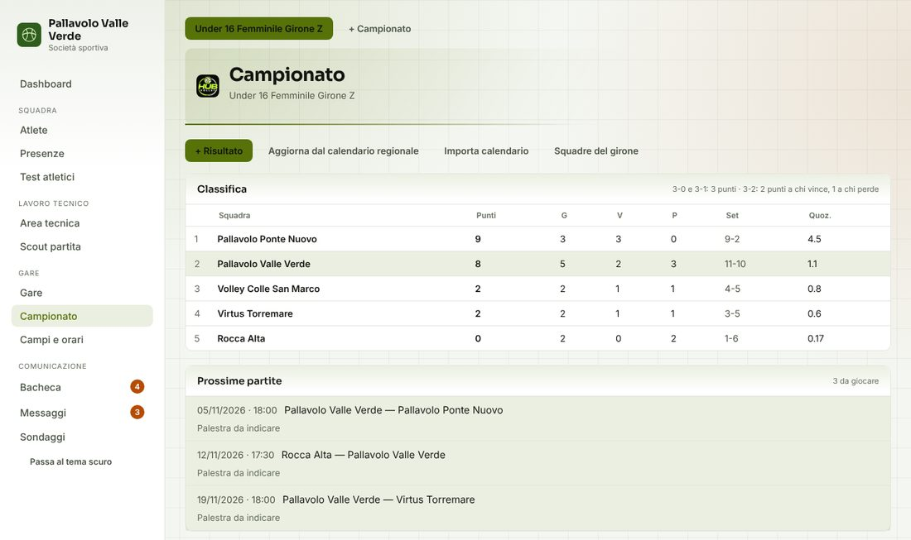
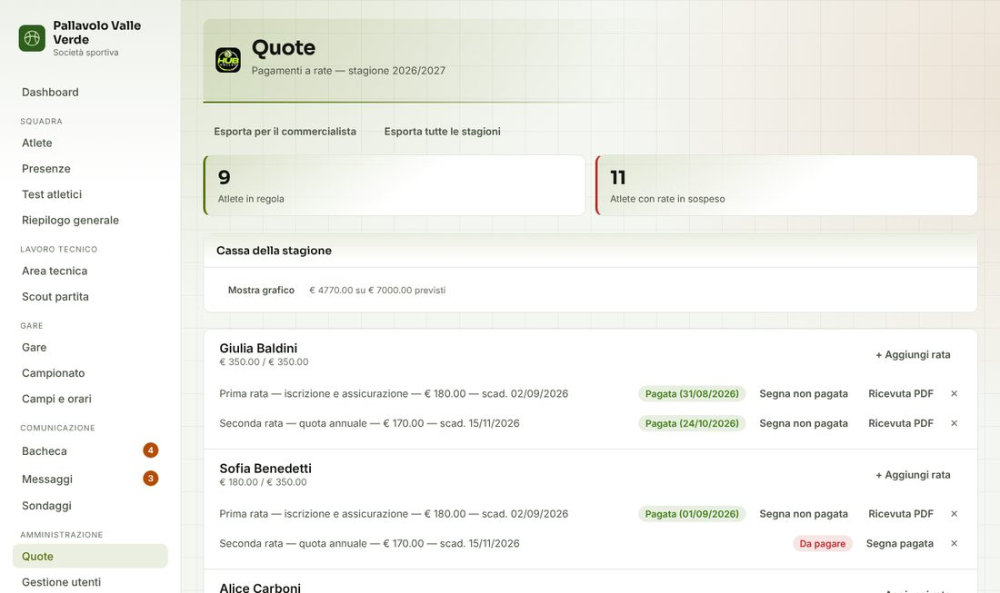

Atlete, presenze, quote, gare, scout e comunicazioni in un posto solo, sul telefono di staff, atlete e genitori. Provala adesso con una società inventata: nessuna registrazione.
Apri la demo Come è pensataSchermate della demo, con una società inventata. Nessun dato reale.







Le cose che oggi stanno tra fogli Excel, chat di gruppo e quaderni, riunite in un'unica app.
Anagrafica delle atlete con tesseramento, scadenza del certificato medico, storico delle categorie, presenze agli allenamenti con percentuali, test atletici nel tempo e riepilogo generale.
Programmi individuali, generatore di allenamenti, rotazioni, obiettivi e valutazioni per ruolo. Lo scout della partita si compila dal telefono a bordo campo.
Calendario, convocazioni con risposta delle atlete, campi e orari. Classifica e prossime partite si aggiornano dal calendario regionale, con data, ora e palestra.
Bacheca, messaggi e sondaggi. Le comunicazioni arrivano al telefono come notifica, senza dover cercare nelle chat.
Quote a rate con scadenze e ricevute in PDF, gestione degli account e delle autorizzazioni, controllo di quello che manca.
Ognuno vede solo quello che gli serve: l'allenatrice il lavoro tecnico, l'amministratore le quote, l'atleta la propria area.
Nella demo puoi entrare con quattro ruoli e vedere la stessa app come la vede ciascuno.
Presidente e dirigenti hanno il quadro di tutta la società: squadre, atlete, quote, scadenze e comunicazioni, senza chiedere file a nessuno.
Lavoro tecnico, presenze, gare e scout.
Quote, scadenze e comunicazioni. Non entra nell'area tecnica.
Registra i dati della partita e nient'altro.
Vedono i propri dati e quelli di squadra: assenze, convocazioni, sondaggi, messaggi.
Le scelte che stanno dietro all'app, pensate per una società sportiva vera, con tanti volontari e molte minorenni.
È un'app che si installa dal browser sul telefono, senza passare dagli store. Funziona anche da computer.
Quello che scrive una persona lo vedono subito le altre: niente file da rimandarsi e niente versioni diverse.
Sei livelli di accesso (web master, amministratore, staff, allenatore, atleta, genitore). I permessi sono decisi sul database, non solo nascosti nelle pagine: chi non ha diritto a un dato non lo può leggere.
I dati delle atlete sono visibili solo a chi deve vederli. Il genitore vede quelli della figlia collegata. La demo usa solo dati inventati.
Nata dentro una società di pallavolo, con gli strumenti che servono davvero: scout, programmi per ruolo, convocazioni, calendario regionale.
Le funzioni si aggiungono in base alle esigenze delle società che la usano.
Scrivici e ti raccontiamo come adattarla alla tua realtà, dalle squadre alle quote.
Scrivi a PallaVolleyAmo